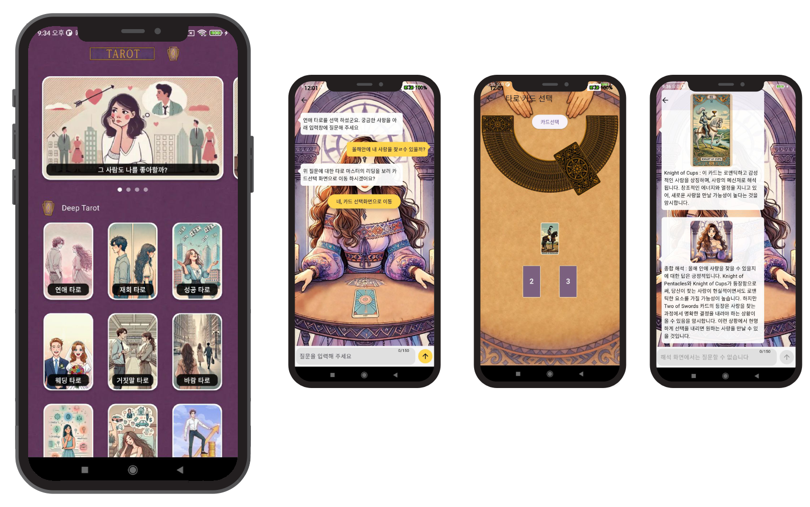

Your trusted development partner
| Your trusted development partner |
| Dairy Fortune | Tarot's Answer | Answer to Love |
| To ensure success by supporting the development of stable mobile apps. |
| Join forces with us in app development and unlock new possibilities together. |
| Partner with us for app development excellence. |
| Join us in revolutionizing app development through collaborative efforts. |
| 매일 운세. 운세를 알아야 인생이 보인다! 매일 매일 무료로 보는 오늘의 운세, 재물운, 귀인운, 투자운, 애정운, 교통운, 사업운, 건강운, 로또운 |
|  | Tarot's Answer |
| 타로의 해답. 연애가 궁굼하다면! 성공이 궁굼하다면! 그 사람도 나를 좋아하는지 궁금하다면!. | |
| If you're curious about relationships! If you're curious about success! If you're wondering if that person likes you too! |
|
Inquiry : juc.stewdio@gmail.com All right Reserved
©
JUC Stewdio |